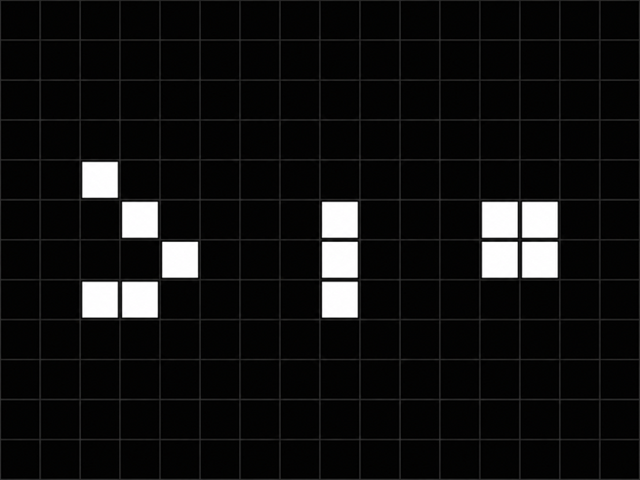

📚 Books & comics
Science fiction, fantasy and comics, including authors such as Alain Damasio, Pierre Bottero, Alan Moore and Denis Bajram.
PERSONAL WEBSITE
I like understanding how things work, learning new techniques and making things myself — from code and 3D printing to origami, cooking and DIY projects.
SUPPORT MY PROJECTS
If you enjoy what I build or share here, you can support upcoming projects through Tipeee or Patreon.
ABOUT
I followed a scientific path, driven by the desire to understand the world. Curiosity is still my main engine: discovering new ideas, learning skills, meeting different people and trying new ways of thinking.
This website originally started as a place to learn web development. This newer version keeps the things that matter: personal projects, travel, recipes and interests, in a simpler format.
PROJECTS

A puzzle game originally created in 72 hours for Ludum Dare 46: place tiles to guide a sleeping pangolin to the finish.
Discover the project →
Paper models prepared with Pepakura, assembled and reinforced with resin — a lightweight alternative to 3D printing for larger shapes.

An exploration of polyhedra, especially stellated dodecahedra.

HTML, CSS, JavaScript, PHP, SQL, C++… plus an interactive Game of Life simulation that runs directly in the browser.
View the project →PHOTOS & TRAVEL
COOKING
INTERESTS
Science fiction, fantasy and comics, including authors such as Alain Damasio, Pierre Bottero, Alan Moore and Denis Bajram.
Films such as 2001: A Space Odyssey, Interstellar, Memento, Gladiator and the Star Wars saga.
Science, mathematics, cinema, literature and ecology: the Internet remains an amazing tool for discovery and learning.
CONTACT